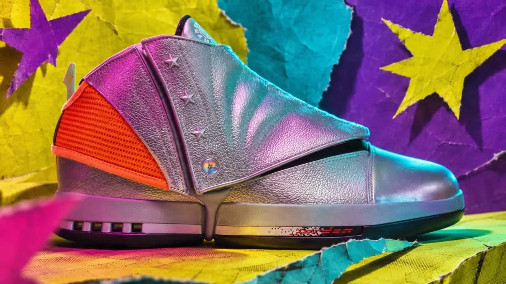

Dream City Studios / Independent concept film / 2026
Free The Youth × Air Jordan 16
A metallic-silver shoe thrown into a moving punk zine. Torn paper, cutout stars and whip pans turn eleven product angles into a single fast edit.

01 / Creative direction
Make the page move.
The late-’80s and ’90s flyer and skate-zine reference shaped the cut: torn paper, off-register print, collision colors, and type-like shapes that hit on the beat. Silver leather, black mesh, and orange details take on the color of each set. Cutout stars and strips of torn paper pass in front of the shoe as well as behind it, so the graphics feel like part of the scene rather than a backdrop.
- 01–03 / Profile
Side swipe
Opposite profiles turn the whip-pan into a visual call and response. A punch-in on the shroud stars links the shoe to the collage.
- 04–08 / Details
Double trouble
Outsole, tread, heels and the pair get distinct camera moves, from an overhead roll to a fast pullback.
- 09–11 / Unshrouded
Last shout
The black upper and lace details take over as the edit closes on red branding against orange and lime.
02 / Visualization lab
One photo, one shot.
Eleven product photographs established the starting views. A storyboard gave each angle a camera move, palette, and role in the cut. Dream City Studios built image and motion passes from those views, then cut the shots together to an original instrumental punk track.
The film uses AI-assisted imagery. Fine markings, surface textures, and perspectives are interpretations, not exact product reproductions. This independent study was not commissioned by or affiliated with Jordan Brand or Free The Youth.
Creative direction, visualization and edit / Dream City Studios